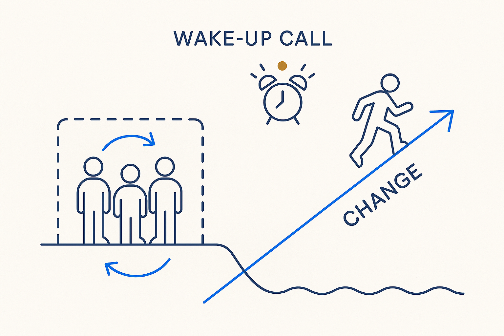

The change is already underway while people and organizations are still tiptoeing around it. This is the wake-up call: stop circling, face it, and move — before the gap to the ones who did becomes too big to close.

> The change is already underway while people and organizations are still tiptoeing around it. This is the wake-up call: stop circling, face it, and move — before the gap to the ones who did becomes too big to close.
Right now, most people and organizations are still tiptoeing around it. They sense that AI changes everything, that the old way of modeling and working won’t hold, that a transformation is coming — and they circle it, run a pilot, form a committee, wait for it to get clearer. They postpone, because underneath it they’re uncertain — unsure where to start, unsure it’s worth the upheaval, so they delay. Meanwhile the ground is already moving. This is the wake-up call: the change isn’t on the horizon, it’s here, and hesitating is itself a decision with a cost.
This is exactly the impasse we started from. People postpone because there is still too much unclear — the field is fragmented, the tools contradict each other, the new roles and methods haven’t settled, and AI has scrambled the rules faster than anyone has answered them. That lack of clarity is not laziness; it is a genuine stuck point. And it is precisely the impasse Breakthrough Modeling exists to break: impasse → wake-up call → breakthrough → momentum.
A wake-up call is not panic; it is clarity arriving suddenly. It names what everyone half-knows but hasn’t acted on: the tools are ready, the smaller and smarter organizations are already moving, and the comfortable pace of “we’ll get to it” has quietly become dangerous. The honest response is to stop circling and face it — accept that it comes with a price, that it takes real change, and start now.
And here is the turn: Breakthrough Modeling offers the clarity the impasse lacks. Where things are murky, BTM makes them explicit — one model uniting structure, movement and meaning, a shared vocabulary of concepts, everything as open, versioned, readable metadata. Full openness — openheid van zaken — is the answer to “there’s still too much unclear”: not another opaque tool, but a way of working where what is agreed, what is modeled and how it’s measured are all in the open. The wake-up call points at the problem; BTM is the clear way through it.
This is urgency with the alarm turned on, and it is provocation pointed at the whole industry’s hesitation. The point isn’t fear — it’s momentum. Wake up, look at what’s actually happening, and move deliberately while there is still room to lead rather than scramble to catch up. And of course — consistent with everything BTM stands for — the insights of BTM itself may be challenged. That’s not a weakness; it’s the point. An approach built on openness and challenging has to hold itself to the same test, and it welcomes it.
Where it lives: the signature principle of Breakthrough Modeling — the change is here; stop circling and move.